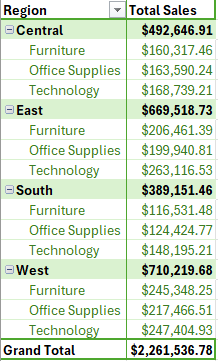
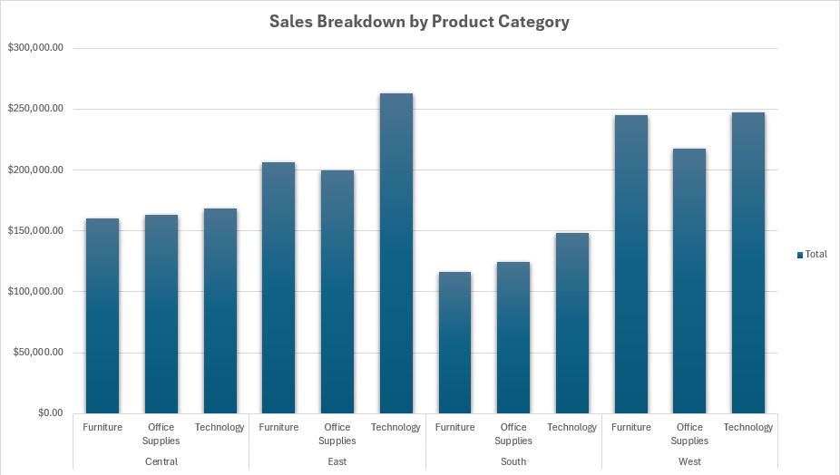
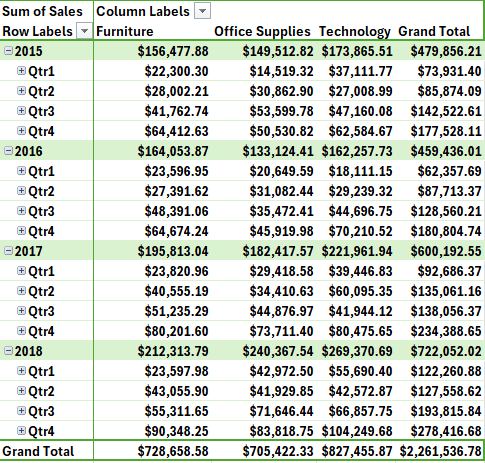
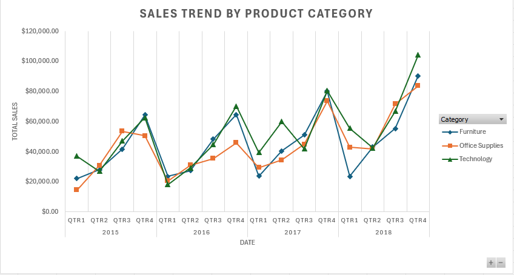

Graduated with a Master of Science in Computer Science from Monmouth University.
Have experience creating full stack web apps and working with rest API’s.
My academic journey culminated in writing a thesis on Knowledge Graphs and their real-world applications, showcasing my ability to bridge theoretical concepts and practical solutions.
May 2022 - Aug 2022
Master of Science in Computer Science
Graduation Year: 2024
GPA: 3.8
Bachelor of Science in Computer Science
Graduation Year: 2023
GPA: 3.5
Developed a Neo4j graph database to analyze data trends, utilizing Cypher for querying.
Integrated LangChain to create Cypher queries through prompt-based interactions with large language models, enchaining user interaction and querying capabilities
Technologies: Neo4j, Cypher, Python
Developed an AWS cloud-based e-commerce website using HTML and CSS.
Implemented cart and checkout functionalities with cookies, as well as basic order tracking, using JavaScript and a backend RDS MySQL database.
Technologies: Html, CSS, MySql, JS
Developed a calorie tracking web app with login functionality using PHP and the CodeIgniter framework.
Integrated the NutritionIX API for nutritional data and implemented a backend MySQL database.
Technologies: Html, CSS, MySql, PHP, Rest API
This project analyses sales data across multiple product categories and regions over several years. The goal was to explore sales trends, identify seasonal patterns, and assess regional performance using interactive visualizations in Tableau. Using Excel, I cleaned and pre-processed the data to ensure consistency. Tableau was then used to create an interactive dashboard, including sales trend analysis and a regional heatmap.
To analyze and visualize the sales data effectively, I followed a structured process that combined data cleaning, exploratory analysis, and advanced visualization techniques. Below is a summary of the steps I took:
Imported raw data into excel
Cleaned and formatted data by standardizing date formats and removing erroneous characters
Calculated summary statistics to understand key metrics like total sales and sales by category
Used pivot tables to analyze sales by region, product category and time
Developed a Tableau dashboard to present insights interactively
Designed a multi-line chat for sales trends by product category across quarters
Developed a heat map to show sales performance across states, with filters for region, product category and year among others
Key findings revealed that Quarter 4 consistently achieved the highest sales driven by the technology category. Between 2015 and 2016, some product categories experienced stagnant or minimal growth in sales, some even seeing decreases. However, starting 2017, there was a significant upward trend in sales across all categories. The Technology category demonstrated performance levels comparable to other categories and, at certain points, surpassed them in sales.
This pivot table shows total sales for each product category broken down by region. This table reveals key data displaying the performance of each region between 2015-2018. The graph associated with the table visually represents each individual product category for each region associated region displaying each region’s performance.
 This pivot table displays the sales for each product category over each quarter of 2015-2018. This gives great insight into which products are performing better than others as well as which time of year sales increase or decrease. The associated line graph visually displays these trends for a clearer comparison of sales over time.
 The dashboard provides an interactive overview of total sales, broken down by product category, region, and time. It enables users to filter data by year, quarter, region, and product category among others to examine trends and performance across different segments. The dashboard’s purpose is to give users a high-level understanding of sales patterns, while also allowing them to drill into more detailed views of the data.
This chart visualizes sales trends over time, allowing users to compare how each product category (Furniture, Office Supplies, and Technology) performed across multiple years and quarters. It is particularly useful for identifying seasonal patterns or category-specific sales growth.
The pivot table provides a detailed breakdown of total sales by product category for each year and quarter, enabling users to examine specific data points and identify anomalies or trends in product sales performance.
This heatmap visualizes sales by region in the United States, color-coded by total sales. Darker shades represent higher sales, while lighter shades represent lower sales. This helps users quickly identify regions with the strongest and weakest sales performances.
Filters for product category, year, quarter, and region allow users to tailor the displayed data. This interactivity lets users focus on specific data segments, making the dashboard a powerful tool for exploring various perspectives of the sales data.
To ensure clarity, the multi-line chart uses distinct colors for each product category, and the heatmap uses a color gradient for easy interpretation of regional sales. The pivot table is designed to provide a detailed, at-a-glance view of sales, and filters are strategically placed to maximize usability.
This analysis provided valuable insights into sales performance across regions, product categories, and over time from 2015 to 2018. By utilizing pivot tables, trend analysis, and dynamic visualizations, key patterns and trends in the data were uncovered, such as significant growth in certain regions and product categories. The dashboard effectively consolidates these insights, enabling efficient exploration of sales trends, regional performance, and product category contributions.
The project also demonstrates proficiency in cleaning and organizing complex data, as well as in using Excel and Tableau to transform raw data into actionable insights. Visualizing the data revealed growth areas and trends, contributing to informed decision-making and providing a foundation for future analysis. This work emphasizes the importance of data-driven decision-making and highlights how visualization tools can effectively communicate complex business insights.
LinkedIn: LinkedIn Profile
GitHub: GitHub Profile